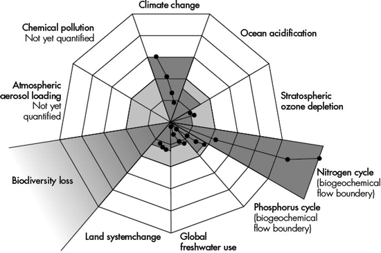
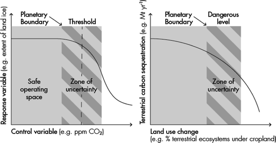
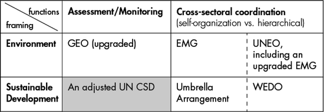

5.1 Targets
The two-degree target concerning climate change has been vigorously debated during the run-up to and the aftermath of the Copenhagen Climate Conference COP 15 (WBGU 2009; Berkhout 2010; Geden 2010; Hulme 2010; Jaeger and Jaeger 2010; Von Storch and Bray 2010; Bachmann 2012). The idea of setting global targets has also become part of a broader concept of ‘Planetary Boundaries’, which goes beyond climate change and applies an earth systems perspective (Rockström et al. 2009a, b; Steffen et al. 2011).1 In its report ‘World in Transition – a Social Contract for Sustainability’, the German Advisory Council on Global Change (WBGU) addresses the need for a ‘great transformation’ (WBGU 2011). The report recommends ways to shift our societies towards sustainability, in order to avoid, among other things, crossing planetary boundaries or ‘guard rails’ as it is often referred to by the WBGU.2
This article does not address major challenges related to ‘great transformations’, but focuses on specific aspects related to governance challenges of the planetary boundaries concept. This concept can be interpreted as a set of conditions to be respected by human activities and in this sense as a rationale for transitions towards sustainability as well.3 At its core, this article addresses two questions. First, is the concept of planetary boundaries useful in governing transitions towards sustainability in coupled socio-ecological systems? Second, how could such a concept be applied and institutionalised in governance processes? In this context, some ideas are discussed in this article, how the insights from the debate about ‘planetary boundaries’ could be put in practice at the time of Rio20+.4
My research interest in ‘planetary boundaries’ is as follows: It seems intuitive to identify boundaries of an earth system which is increasingly threatened by human activities. Being aware of and hence studying boundaries may be necessary for effective governance of sustainable development, if crossing a boundary would result in an abrupt and difficult to reverse change (Folke 2006; Lenton et al. 2007).5 Assuming that such thresholds exist, and we may or may not be able to identify them precisely, the practical concern is how to detect proximity to the boundary.6
Boundaries, in short, could function as ‘warning signs’ that provide important orientation for complex systems in turbulent times. A closer look at a subject matter reveals that the problems start with the details. Due to the author’s familiarity with global freshwater governance, which refers to one of the nine boundaries identified so far, special emphasis will be on this issue area. As freshwater is certainly not the best case example of a global boundary due to the place-specific character of water-related problems, a meaningful application of the planetary boundaries concept to freshwater issues would de facto present a contribution to the ‘proof of concept’ as well.
5.2 The Planetary Boundaries Concept
Those pursuing the idea of planetary boundaries have identified nine (or ten) ‘boundaries’ so far (see Fig. 5.1). By such a boundary, ‘a specific point related to a global-scale environmental process is [meant] beyond which humanity should not go’, because this could hamper human development profoundly (Steffen et al. 2011: 2). In this context it is frequently said that due to the massive alteration of the earth system by humankind in the past 200 years or so, humanity has transitioned from a stable global environment conducive to human development called ‘Holocene’ to a new, unstable, at least unknown era called, by Paul Crutzen, ‘Anthropocene’ (Steffen et al. 2004). The inner circle of Fig. 5.1 in light grey presents the ‘safe operating space for humanity’. The dark grey related to the individual boundaries expresses whether or not a boundary is crossed related to a given sub-system. As the figure shows, this is already the case according to this concept for climate change, biodiversity loss and the nitrogen cycle.

Fig. 5.1
Rockstrom et al. (2009a)
The concept presents under the rubric ‘safe operating space’ further arguments for an idea widely recognised and intensively discussed within global environmental governance for a while. Since the ‘safe operating space’ consists of a combination of all boundaries or sub-systems – and some may still be identified in the future – it emphasises both the systemic and interrelated nature of the challenges at hand (Young 2002; Gehring and Oberthür 2008; Oberthür and Stokke 2011). Hence, it is not sufficient to analyze and ‘manage’ these boundaries in isolation; they must be addressed in an integrative manner. Since the global freshwater availability is limited – a challenge that is severely aggravated by the fact that water resources are very unequally distributed globally – other sectors relying on freshwater such as food or biomass production have to take the ‘freshwater boundary’ into account. If an increased use of biomass for fuel production is one strategy to mitigate climate change, for example, the integrative nature of the boundary concept could present a useful tool for making decisions in an integrative way. That is, if strategies related to climate change have a negative impact on other boundaries such as freshwater and land, they should be applied with care and they have to be taken in full awareness of the choices to be made.
Furthermore, the actual proximity to a boundary may provide a rough indication of whether certain options are still at our disposal. If we are already well within the ‘dangerous zone’, i.e. beyond the point that should present a boundary for a given sub-system, human activities should not add further pressure to this area. For example, if the challenge of food security is continuously rising as currently anticipated (Ingram et al. 2010; Brown 2011: 175–191), necessary resources such as freshwater, land/soils or phosphorous may not be available at an equal scale for other services.
As a consequence of our emerging understanding of such interdependencies, the planetary boundaries concept is used to call for major governance and/or institutional reforms already within its initial or ‘proof of concept’ stage. In this respect, the (supposed) fragmented or (often) non-legally binding character of the global environmental governance system in place is often presented as a major weakness and is diagnosed as a ‘patient’ who needs to be cured (Hoff 2009; Walker et al. 2009; Steffen et al. 2011).
5.3 What Is (Not) Addressed
Because this article focuses on the governance implications of the planetary boundaries concept, it will not thoroughly discuss whether these nine candidates present the right set of boundaries, or if the boundaries in Fig. 5.1 are set correctly or arbitrarily. The issue of setting the boundaries at all, however, should be emphasised as an act of governance itself. This shifts the focus of analysis related to the planetary boundaries concept away from identifying the ‘right’ point where the boundaries have to be located towards governance concerns.
The correct identification of the individual boundaries may be a major reason for criticism within the academic community, but it may turn out that the fundamental challenge of very precisely setting the boundaries does not present a major problem of the concept. If we understand the planetary boundaries as ‘boundary objects’ – as introduced and elaborated upon by Stefan Jungcurt in this volume (Jungcurt 2012) – this may offer a different way of thinking about the concept. It would frame the nine boundaries as knowledge-claims about the earth system, which are both robust and flexible enough to meaningfully capture phenomena of a ‘Planet under Pressure’.7 In doing so, these boundaries would then not be necessarily described exclusively by scientific knowledge-claims. The authors of the planetary boundaries concept themselves call their proposals where the individual boundaries should be located in a trivialised manner ‘a first guess’ (Steffen et al. 2011: 5). This indicates that also the second and third attempt of specifying the boundaries will not result in very precise answers.
On the one hand, such considerations seem to run counter to the strong notion on ‘solid science’, which should underline the planetary boundaries concept. On the other hand, however, the nine boundaries identified are introduced as ‘broad and vague concepts’, which may be the only applicable way (in ’t Veld 2012: 43–58). Furthermore, the authors of the planetary boundaries concept clearly acknowledge the following distinction. While system thresholds are ‘absolute’, i.e. set by the inner logic or functional conditions of the earth system, a ‘boundary’ is based on a ‘normative judgement, determining a safe distance of how societies choose to deal with risk and uncertainty’. Boundaries are ‘human-determined values of the control variable set at a ‘safe’ distance from a dangerous level’ (Rockstrom et al. 2009a: 3).
Hence, a boundary is related to society’s adversity towards the risk of being pushed into the ‘unknown’ once a threshold is passed. If we believe – based on whatever sort of reasons, including scientific reasons – that two degrees will still result in ‘manageable’ climate change, we may set the boundary accordingly. If we conclude differently, we may tighten or loosen this boundary. As a ‘heuristic’, the boundaries come along with a ‘zone of uncertainty’, see Fig. 5.2 below. This zone is located between the boundary chosen and the expected actual threshold or dangerous zone, which position we do not know precisely. The ‘width’ of this zone is related to the societal acceptance of risky or risk-adverse strategies. Setting a boundary at different levels, say, a global mean temperature in relation to 300, 350 (as the proposed climate boundary), 450, 550 ppm or more/less, will result in very different outcomes and will require different climate policies. For instance, one reason to explore options for climate engineering is constructed around the notions of urgency and severity of the problem. Similar considerations apply for the other boundaries as well. Choices will have to be made; choices that will be more or less difficult based on the level of ambition put forward by the level at which the boundary should be set. Hence, at the core of this lies the idea that such kind of state-of-the-art scientific knowledge is only partially ‘neutral’ as it is from the outset a political act, say, a ‘normative judgement’ to set these boundaries.8 This is, obviously, a way less clear-cut but socially informed scientific contribution to solving the challenges of transitions towards sustainability than a set of fixed numbers may have pretended. However, there are three important limitations of the concept that deserve mention.

Fig. 5.2
Rockstrom et al. (2009a)
First, the proponents of the concept are very clear about the fact that the planetary boundaries focus only on the Earth as a complex system and less directly on the human enterprise, i.e. they focus on one dimension of sustainable development (Steffen et al. 2011: 2). This focus on the earth system may be acceptable for rather analytical reasons until the concept is sufficiently established, but then it has to follow the coupled system-thinking as a second step of its incarnation. If, for instance, the phosphorous boundary is set almost exclusively in relation to the increased phosphorous inflow to the oceans (Rockstrom et al. 2009b: 13–14), discussions about ‘peak phosphorous’ in relation to the role of phosphorous for food production are largely ignored, even if such discussions could quite well be framed along the lines of (global) boundaries. The same is true for other boundaries. The global availability of a resource such as water, soils or nitrogen per se speaks little for social systems, which are driven by development trajectories on the one hand, and issues such as access, affordability, fairness or minimum requirements such as liters or calories per day on the other. If one adds ‘social boundaries’ such as full access to food, water, shelter, good health et cetera, the ‘safe operating space’ will look different. Such a truly coupled ‘safe operating space’ is much harder to define, however, it would avoid an oversimplified or disjunctive picture by focusing on the Earth System alone.9
Second, it is – politically speaking – problematic to say that (only) the planetary preconditions are ‘non-negotiable’ (Rockstrom et al. 2009b: 2).10 This statement is correct if, and only if, it refers to the fact that the ‘rule of nature’ is different than social rules. The rules of nature are indeed ‘re-negotiation proof’.11 However, in the context of sustainable development, such wording is not helpful for reaching a common understanding about and agreements for human issues. Even more, it falls (potentially) behind the Brundtland consensus. Or to put it differently: the right to development should not be re-negotiated either. Above all, science does not take place in a vacuum and a well-known argument of the climate discourse is starting to come to the surface in the debate about ‘planetary boundaries’ too. If ‘the North’ has been mainly responsible for an already ‘limited safe operating space’, why should ‘the South’ accept global boundaries as a consequence? Natural systems will not care about this line of thinking, but if one wants to implement ideas into an increasingly sensitised ‘global social fabric’ related to these kinds of questions, such resentments cannot be ignored.12
Third, social systems prove that setting boundaries causes these boundaries to be reached. Setting limits, more often than not, has unleashed the logic of maximisation to reach these limits. From zoning in land use management, to the concept of carrying capacity, to issues such as defining a fiscal budget deficit, good (or not so good) intentions have often led to adverse effects and the maximum (yield) became the norm. Now: imagine the boundary was set incorrectly, – for example, to high – but social systems have adjusted their inner logics in accordance with this limit. Hence, the promises of clear-cut boundaries or predictions come at some expenses. They may be necessary indeed, in order to govern increasingly complex and interdependent systems. At the same time, they may lead to a loss of adaptive capacity or responsiveness following a wrong sense of certainty produced by them (Dessai et al. 2009), not to speak of the fundamental problem of applying their ‘logic’ to reflexive, open and hence non-predictable social systems, as Roel in ’t Veld has stressed at various occasions (in ’t Veld 2012).
5.4 Systemic and Cumulative
Some of the boundaries may entail real ‘tipping points’, that is, they will result in abrupt regime shifts once a critical threshold is passed. This may be the case, for example, for the climate boundary, but is less clear for other boundaries. A further decline of (global) freshwater and soils as well as biodiversity will be characterised rather by an increasing deterioration of the respective systems and less by clear regime shifts. A regime shift may or may not happen in these cases as a result of the cumulative effects of these system’s deteriorations. Figure 5.2 presented in Sect. 5.3 highlights this difference. There is no need to argue that one of these types of boundaries is more important or challenging than the other. However, it presents an important difference that needs to be taken into account, certainly in the moment when the respective governance responses are addressed. It may be concluded that governance functions such as early warning are particularly important for sub-systems characterised by thresholds, as a small step could lead to a massive change in the state of the system. On the contrary, it could be said that assessment and early warning tools are equally important for the other kind of sub-systems, because it has been proven as crucial but particularly difficult to install effective monitoring and governance responses for ‘creeping crises’ such as the global deterioration of fertile soils, where the ‘sense of urgency’, the ‘notion of emergency’ or the ‘threat of abrupt changes’ cannot be applied that easily (Vlek 2005; FAO 2011).
A comparable differentiation in global environmental change research along the lines of ‘systemic versus cumulative’ was presented already back in 1990 (Turner et al. 1990, now again Hulme 2010). Some problems of global environmental change are ‘systemic’ global problems while others only add up to a global problem due to their ‘cumulative’ effects, but they are occurring differently at different places on earth. Building on this distinction and the intense debate related to the governance implications resulting from it, it could be questioned fundamentally, if it is possible for governance systems to make use of such highly aggregated knowledge-claims resulting from concepts such as the planetary boundaries. Thus, can this kind of knowledge be transformed into policy responses that go beyond intuitively plausible considerations?
Assuming that the answer to this question is ‘yes’, it is not difficult to imagine that a governance architecture, building on the concept of planetary boundaries, would have to be very complex. At the same time, this could only be a complexity that will not apply one-size-fits-all-solutions (Meuleman 2012). Hence, it is misleading to expect that the way forward involves implementing a top-down ‘global governance machinery’ to orchestrate the planetary boundaries. This would, among other things, also require a fundamentally different global governance system than the one in place.
One line of critical argumentation in this respect was put forward by Hulme (2010) concerning the limits of ‘global kinds of knowledge’. Even though his argument addresses the two-degree target of global climate governance, it counters all ‘uniform’ or ‘place-insensitive’ kinds of knowledge-claims. Hulme argues that these global scientific kinds of knowledge ‘are all de-contextualised, top-down views of planetary knowledge, knowledge-making detached from meaning-making, according to Jasanoff. It is the view from everywhere’ (Hulme 2010: 560).
With Hulme we may have to conclude that global kinds of knowledge may have brought us into the crisis instead of helping us out of it, as they disconnect ‘neutral scientific knowledge’ from value-laden and context-specific meaning. The first without the latter will not lead towards informed decision and action. However, there is no reason to be naïve. The ‘meaning’ entrenched in social practices is still, on the one hand, contributing to creating the problems of global change. However, it can also lead, on the other hand, to finding the solutions to address these problems effectively. As the current focus in global environmental change and sustainability research increasingly shifts from understanding the problems to identifying solutions to these problems – i.e. addressing questions of what should be done – relying on global knowledge about the earth system alone may become an increasingly poor fit for the challenges at hand, if not detrimental in its effects.
As for the theoretical implications, Hulme is inclined to follow Ulrich Beck’s cosmopolitan perspective of the world in an era of a second modernity (Beck 2006, 2010). Under such circumstances, clear-cut boundaries, say ‘either-or-distinctions’, become less important and ‘distinctions between global and local, between quantitative and qualitative knowledge’ are blurred and dissolved (Hulme 2010: 562–563). ‘A cosmopolitan perspective would suggest the ‘global’ is less about scale or aggregation than it is about embracing plurality in the making, accrediting and mobilising of knowledge.’ (Hulme 2010: 563) There are two possible readings of this reasoning applicable to the boundaries concept. On the one hand, it could be concluded that it is this plurality that is coming under attack, if highly aggregated knowledge-claims about the climate or the earth system and so on are being made.13 But understanding planetary boundaries as ‘boundary objects’, on the other hand, could indeed ‘embrace plurality’ while mobilising different kinds of knowledge, including scientific knowledge. As the concepts of ‘second modernity’ and ‘knowledge democracy’ help understanding (in ’t Veld 2012), scientific knowledge should be neither the only ‘truth’ responsible for defining the correct positioning of the boundaries, nor should it be irrelevant. It just loses its monopoly.
Such questions are not new, also not for scientists. The focus on planetary boundaries gives a special knowledge-related twist to an old debate. That different problem structures call for different governance responses is a cornerstone of the governance debate about the institutional dimensions of global environmental change. For example, while a global treaty regime may be indeed the best approach for systemic problems such as the ozone challenge, it may need adjustments for cumulative, place-specific challenges such as freshwater or soils.14
5.5 Governance Challenges
A closer look at concrete cases of (global) institution-building reveals that the diverse, if not blurry world of cosmopolitism is already among us. The analysis of Frank Biermann (2010) of the global climate regime post Copenhagen presents the case-in-point in this respect. Biermann highlights the parallel existence of top-down and bottom-up, of state and non-state actors, of global and local, concluding that the future of the climate regime will be more strongly influenced by non-state actors and/or by states. How does the planetary boundaries concept fit it? What concrete governance challenges are associated with the knowledge-claims put forward by the concept and what governance reforms may be able to implement its policy-relevant insights? The authors of the planetary boundaries concept call for quite profound governance reforms as a result of their considerations. They claim:
Ultimately, there will need to be an institution (or institutions) operating, with authority, above the level of individual countries to ensure that the planetary boundaries are respected. In effect, such an institution, acting on behalf of humanity as a whole, would be the ultimate arbiter of the myriad trade-offs that need to be managed as nations and groups or people jockey for economic and social advantage. It would, in essence, become the global referee on the planetary playing field. (Steffen et al. 2011: 5)
The quest for governance for sustainable development has been challenging the notion of state sovereignty from the very beginning, for example due to the transboundary nature of many problems (Young 1994, 1999; Zürn 1998; Rechkemmer 2004; Conca 2006; Pattberg and Stripple 2008). To operate ‘above the level of individual countries’ is no new ground for practitioners and researchers in this field, even though the outcomes of international environmental governance are at its best mixed 20 years after the Rio Summit and 40 years after the Stockholm Conference on the Human Environment (Young 2008b; Simon 2010).
The notions of ‘authority’ and ‘ultimate arbiter’ may point more precisely into the direction of what the authors may have in mind and what they may perceive as new kinds of institutions and diplomacy necessary to implement insights presented by the planetary boundaries concept. ‘Authority’ could be understood in different ways, both as a top-down ‘referee’ and as a knowledge-based ‘soft power’ mechanism such as advisory councils and peer-review processes. Their establishment for monitoring our proximity to the planetary boundaries is even realistically conceivable in the near future, but only in the case of the latter. The notion of an ‘ultimate arbiter’ however – who is managing the myriad trade-offs – seems to call for a (legally-binding) regulatory framework, which is more ambitious and not likely to emerge quickly. To call for ‘some creative thinking’ and using the idea of an ‘Earth Atmospheric Trust, which would treat the atmosphere as a global common property asset’, may not be sufficient in this respect (Steffen et al. 2011: 5–6).
The discussions in the issue area of global water governance by Arjen Hoekstra (2006) or Holger Hoff (2009) highlight nolens volens the difficulties of far reaching calls for governance reforms. Both authors present – in a different but comparable way – a case for the need for global water governance, i.e. for a resource that is mainly and correctly governed at local to maximum regional level. In making the case for governing water globally, they sketch out on the one hand a world that would have to be restructured or reconfigured according to water challenges. For example, the export of agricultural products would not be driven (mainly) by an economic interest in trading agricultural commodities but by the availability of water resources needed to produce these products. In such a world, the availability of water would determine the global market for agricultural products as well as decide and regulate who should export and who should import food.15 On the other hand however, the concrete governance proposals made by these two authors in their concluding paragraphs are much less far reaching. They either refer in a general sense to Elinor Ostrom’s concept of polycentricity, as many contributions to governance challenges do these days (Hulme 2010; Underdal 2010; Steffen et al. 2011), or they suggest governance measures such as strengthening assessments or advisory councils, which are providing ‘softer’ or simply different functions than strict regulation.
One approach of conceptionalising various institutional functions was put forward by Young (1999, 2010) that is worth highlighting in this context. In his analysis, Young made clear that beyond ‘classic’ regulatory functions, institutions can perform procedural (e.g. providing a forum for negotiations and discussions on a regular basis), generative (e.g. reframing a problem such as the protection of nature towards sustainable use of ecosystem services) or programmatic functions (e.g. action programmes based on international agreed upon goals and targets).16 The message from such a line of analysis for those who seek to establish new institutions based on the planetary boundaries concept is twofold.
First, to establish a legally-binding global regulatory regime or an international organisation with far-reaching authority to manage the ‘myriad trade-offs’ is neither politically easy to implement – again, nature will not care much about this – nor necessarily the best option (Meuleman 2012). Second, even if regularly arrangements for governing the planetary boundaries will not emerge in the near future, other governance functions should not be neglected. We may appreciate the generative potential of the concept that helps understanding the integrative nature of the earth system in the era of the ‘Anthropocene’, but we may be careful with calls for a global regulatory ‘referee’ who governs the boundaries in a top-down manner.
Regardless what the above quote of the authors of the concept means in the end, the proponents of the planetary boundaries conclude along similar lines. They present the following main functions that should be delivered by a governance arrangement which is informed by the concept of planetary boundaries: (a) early-warning systems, (b) dealing with uncertainties, (c) multi-level governance and (d) capacity to assimilate new information (Steffen et al. 2011: 5). Three out of these four functions clearly address the generative aspect of governance as just introduced. How could the concept be put in practice?
First, concerning its generative governance function, any of these boundaries is backed already by a more or less well organised scientific process in order to generate the information and knowledge needed for governing these issue areas sustainably. These research and assessment processes range from scientific and technical bodies as part of an established regime (Ozone) to intergovernmental panels or platforms for climate change (IPCC) and biodiversity (IPBES) to broader status reports such as the World Water Development Report (WWDR) to status reports on (agricultural) lands to more bottom-up driven scientific networks such as work on ocean acidification, the ‘International Nitrogen Initiative’17 or the ‘Global Phosphorous Research Initiative’.18 What a planetary boundaries perspective could contribute is the consideration of understanding different issue areas as an integrated ‘system’. Such an integrative approach is already well-established within earth system science and it is partially and in an ad hoc manner already practiced in international environmental governance.19 To think about a better institutionalisation of integrative assessment processes seems to be a candidate for a still small but transformative change in the context of Rio20+ and its focus on institutional reform for sustainable development governance. The planetary boundaries concept could help in this respect.
Second, how to govern the boundaries in relation to each other is not only an issue of creating integrative and transdisciplinary assessment processes. It also raises the question of how to set up multi-level and multi-sectoral governance arrangements within the spectrum of fully integrated approaches on the one hand and fully specialised approaches (one problem, one institution) on the other.20 As the planetary boundaries concept points out, in addressing the challenges related to one boundary, the consequences of such action for other boundaries have to be taken into account. This has also been partially institutionalised within the UN system, for example, by inter-agency mechanism such as UN-Water or the Joint Liaison Group of the three Rio Conventions (Simon 2010).21
For example, the inter-agency mechanism UN-Water, for instance, was (re-) established in 2003 just after the Johannesburg Summit. It is worth highlighting that UN-Water could build on a relatively strong multi-sectoral approach in this policy field. To ‘think outside the water box’ is one of the slogans in this regard, which pays attention to the fact that the most powerful drivers and possibly greatest leverages to better or to worse the global water crisis are found outside the water sector (WWAP 2009). If UN-Water performed its coordinative and synergistic function effectively, it would certainly add a new, not revolutionary but transformative nuance to the fairly complex institutional framework for sustainable development in general and global water governance in particular. In this respect, UN-Water may or may not be informed by the specific insights of the earth system science concept of the planetary boundaries. At the same time, science could pay more attention to this ‘case study’ of how integrative governance arrangements could be institutionalised (Baumgartner 2011; Schmidt 2011).
However, integration goes already deeper in these days. Areas that are governed by rather strong international organisation, such as land by FAO, increasingly explore options of multi-sectoral, say, integrative governance approaches. Hence, the launch of the FAO-led ‘Global Soil Partnership’ not only connotes the soil aspect of sustainable land management a bit more forcefully as it has been done so far, it also puts forward a partnership model that addresses the multi-sectoral and multi-actor character of the challenge at hand. Thus, the interesting observation is that even ‘strong players’ seek the ‘softness’ of new governance forms and functions in order to implement their goals and visions more effectively. Even if climate change, to give another example, is first and foremost related to handling greenhouse gas emissions in a better way than has been done so far, it can be said that 20 years of climate change negotiations have also demonstrated that solving the climate challenge will both influence and build upon action taken in issue areas such as those represented by the nine planetary boundaries.
Without claiming to be exclusive in the considerations presented here, it can be concluded that two main governance innovations can be identified and supported by the planetary boundaries concept, whose implementation is feasible, despite its ambitions. First, it was argued to better institutionalise integrative transdisciplinary assessment processes along the lines of the interconnected nature of the planetary boundaries. Second, cross-sectoral linkages have to be institutionalised more effectively as well, which can be supportive in the end of mutually beneficial actions, e.g. for climate change adaption, food security, water and soil sustainability et cetera. This can also prevent situations in which ‘my silo solution’ increases ‘your’ vulnerability. If these two contributions or functions are key, which forms need to be put in place in order to implement them successfully?
5.6 Functions and Forms
Following the line of the ‘both-and-thinking’ applied by the TransGov project in general (in ’t Veld 2012), the critical comments above from a governance angle on the planetary boundaries concept should not be understood as fundamental arguments against its relevance. The challenge is rather to find global solutions which are sensitive to local realities and which do not cut off meaningful action of individuals and individual groups. Therefore, this section very briefly introduces options for institutional reform mainly within or associated with the UN system. These processes may be relevant for implementing insights from the planetary boundaries concept. It may be added that these processes started within the UN system but are currently including a more cosmopolitan perspective as well. The role of partners within UN-Water for example vis-à-vis the adoption of a human right to water and sanitation in 2010 could be mentioned as a case-in-point. That is, this human right was pushed very much from outside the UN system and was finally adopted by the UN system. The same will be true, hopefully, for its implementation.
It would be a surprise if ‘substantial’ changes will come out of the institutional reform debate at the conference in Rio in 2012, using the experiences of some 15 years of difficult negotiations in the realm of International Environmental Governance (IEG) as a ‘yardstick’ for measuring ‘substantial’. To make things even more challenging, IEG and the debate about upgrading the United National Environmental Programme (UNEP) (Biermann and Bauer 2005; Young 2008b; Simon 2010), presents just one part of the overall picture of an institutional framework for sustainable development. At the same time, enlarging a problem more often than not has led to finding (new) solutions. In this respect, a proposal was made which calls for an umbrella arrangement that combines the environment – and development agendas along the lines of the consensus of Rio 1992 (Simon 2010).
These two options are certainly not mutually exclusive but different in nature. In case there will be sufficient momentum for an UN Environment Organisation, some functions, such as the coordination of Multilateral Environmental Agreements (MEAs), may be more effectively implemented than other functions. Cross-sectoral coordination beyond the environmental realm, for example, may be better performed by an umbrella arrangement. Even though this debate is not at the centre of this article, the choices put forward within this institutional reform debate may also inform the debate about governing planetary boundaries. This is captured in Fig. 5.3. The horizontal axis highlights the two main governance functions that the concept of planetary boundaries could offer, as discussed in this article. The vertical axis lists two options to frame the challenge, i.e. whether the concept will remain an environmental concept or can and should it be transformed into a governance approach relevant to sustainable development.

Fig. 5.3
Choices for governance arrangements for planetary boundaries in the context of Rio20+
A first message is: Already today, every cell is covered, either by governance responses in reality or by proposals made in the past. In case the planetary boundaries concept is ‘only’ an environmental one, UNEP is the main focus of attention for reform proposals. Concerning assessment and monitoring of the state of the planetary boundaries, an upgraded Global Environmental Outlook (GEO) process seems to be the obvious candidate. GEO may have to be transformed marginally or substantially in the future, for example, to play at least partially a coordinative role vis-à-vis other assessment processes. The novelty would mainly be to develop a better integrative approach to the topics addressed by GEO and the process leading towards its results in order to understand planetary processes as a complex, coupled system.
Cross-sectoral coordination is the second important candidate for reform. Under a ‘light’ and obviously less challenging scenario, such coordination could be performed by the existing Environmental Management Group (EMG), an UNEP-led inter-agency mechanism of the UN system. In case the proposal for a UN Environment Organisation will be adapted, this coordination would get a stronger hierarchical notion and may be able to better integrate – most likely without fully merging – exciting MEAs. This could bring, among other things, some of the planetary boundaries already under one ‘roof’. However, since many important processes would still be handled largely outside UNEP, such as land or water, an UNEO would also have to pay close attention to UN system-wide coordination.
It is time, 20 years after Rio, to re-consider the mandate and the functions provided by the UN Commission of Sustainable Development (UNCSD) as well – the often forgotten fourth institutional innovation of the Rio Summit (Beisheim et al. 2011). The fact that two of its ‘policy sessions’ collapsed in the past few years adds further reasons to this necessity for reform. UNCSD could be rather strong on the side of knowledge-production and facilitation of using this knowledge, for example in the form of its deliberations and negotiations of non-legally binding recommendations (Kaasa 2007). Since its reinvention of 2003, it has been a recurring pattern that the review sessions of UNCSD, which are not under pressure of policy sessions to produce a negotiated consensus outcome document, were perceived as constructive and even innovative learning platforms. They provided some space for ‘outside the box thinking’ and for thinking beyond the lowest common denominator (Kaasa 2007; Karlsson-Vinkhuyzen 2010; Schmidt 2011).
As an established intergovernmental process, and maybe in different incarnation as a Sustainable Development Council after Rio 2012,22 such a body may be a surprisingly good candidate to take care of the assessment and monitoring-related governance functions identified for the planetary boundaries concept. This cell in Fig. 5.3 is thus highlighted, where one may find the best fit or form in the current system for the most promising functions provided by the planetary boundaries concept.
The fourth and final cell focuses on cross-sectoral coordination of the different domains of sustainable development. This could either be done as an inter-agency coordination, which would further highlight the role of the Chief Executive Board (CEB) within the UN system. As its coordinative character may not be sufficient, the proposed umbrella arrangement may be the right level of formalising this.23 Again, along the lines of a ‘both-and-thinking’, an upgrade of UNEP would then not be an alternative but the other side of the same coin, i.e. a reform of UNEP and a reform of UN CSD/the establishment of a (new) umbrella arrangement. Both actors could pool resources and competences in governing the planetary boundaries. There is no need to perceive effective integration as a matter of fully merging existing structures and processes. Instead, taking into account a comprehensive picture and applying an integrative governance approach as required by the planetary boundaries concept may in the end only be achieved by actors who are connected to each other by being built on ‘multiple engagements’ in different institutional arrangements, as Roel in ’t Veld (2012) has argued. Such a ‘configuration’ of a common agenda leaves ample room for diverse approaches.
5.7 The Costs of Inaction
As our world will reach more than nine billion people by the middle of this century, it may be pushed towards its limits and hard regulatory measures may be up for debate pretty soon. Inaction, i.e. if we do not achieve a transition towards sustainability, will aggravate this situation further. If one reflects on the current ability and willingness of key actors (nation state and non-nation state actors alike) to set up binding and effective regulatory arrangements at all levels of governance, it seems to be ‘wise’ to try our utmost to stay within what we currently perceive as ‘our boundaries’. If we manage a transition towards sustainability, we may still have some room for ‘maneuvering’ and achieving desired outcomes even with less ‘firm’ governance responses. If the ‘safe operating space’ continues shrinking as we get closer to the individual boundaries, somewhat harder measures may be needed to remain stable within a ‘limited terrain’. In this respect, this article has explored the question: can the planetary boundaries function as useful ‘warning signs’? The answer is: yes; but. Klaus Töpfer continuously stressed during the research process of the TransGov project that keeping ‘alternative pathways’ open is key, if sustainable development for an open society should remain a meaningful concept. To cut off alternatives for us and for future generations is the real price we may have to pay for our currently unsustainable practices.
Acknowledgements
This paper benefitted from the reviews done by Professor Ernst U. von Weizsaecker and Dr. Louis Lebel, and comments by Professor Oran R. Young. The full responsibility for remaining inconsistencies and possible shortcomings stays with me as author.
Open Access. This chapter is distributed under the terms of the Creative Commons Attribution Noncommercial License which permits any noncommercial use, distribution, and reproduction in any medium, provided the original author(s) and source are credited.
References
Bachmann G (2012) Emergency response – clustering change. In: Meuleman L (ed) Transgovernance: advancing sustainability governance. Springer, Heidelberg, pp 301–326
Baumgartner T (2011) UN-water and its role in global water governance. Global water news. GWSP focus 2011: global water governance, pp 5–6
Beck U (2006) Reflexive governance: politics in the global risk society. In: Voß J-P, Bauknecht D, Kemp R (eds) Reflexive governance for sustainable development. Edward Elgar, Cheltenham, pp 31–56
Beck U (2010) Climate for change, or how to create a green modernity? Theory Cult Soc 27(2–3):254–266CrossRef
Beisheim M, Lode B, Simon N (2011) Ein Rat für Nachhaltige Entwicklung. Vor der Rio-Konferenz 2012: Optionen zur Reform der VN-Nachhaltigkeitsinsitutionen, SWP-Aktuell 2011/A 46, Berlin
Berkhout F (2010) Reconstructing boundaries and reason in the climate debate. Glob Environ Chang 20(4):565–569CrossRef
Berkhout F, Angel D, Wieczorek A (2009) Asian development pathways and sustainable socio-technical regimes. Technol Forecast Soc Chang 76(2):218–228CrossRef
Biermann F (2010) Beyond the intergovernmental regime: recent trends in global carbon governance. Curr Opin Environ Sustain 2:284–288CrossRef
Biermann F, Bauer S (eds) (2005) A world environment organization. Solution or threat for effective international environmental governance? Ashgate, Aldershot/Burlington
Biermann F, Simonis UE (1998) Eine Weltorganisation für Umwelt und Entwicklung. Funktionen, Chancen, Probleme SEF policy paper no. 9, Bonn
Breitmeier H, Young OR, Zürn M (2006) Analyzing international environmental regimes: from case study to database. MIT Press, Cambridge, MA
Brown LR (2011) Plan B 3.0. mobilization to save civilization. W.W. Norton, New York/London
Conca K (2006) Governing water: contentious transnational politics and global institution building. MIT Press, Cambridge, MA
Dessai S, Hulme M, Lempert R, Pielke R (2009) Climate prediction: a limit to adaptation? In: Adger N, Lorenzoni I, O’Brien K (eds) Adapting to climate change: thresholds, values, governance. MIT Press, Cambridge, MA, pp 64–78
Duit A, Galaz V, Eckerberg K, Ebbesson J (2010) Governance, complexity, and resilience. Glob Environ Chang 20(3):363–368CrossRef
FAO (2011) The status of the world’s land and water resources for food and agriculture: managing systems at risk. FAO, Rome
Folke C (2006) Resilience. The emergence of a perspective for social-ecological system analysis. Glob Environ Chang 16(3):253–267CrossRef
Geden O (2010) Was kommt nach dem Zwei-Grad-Ziel? Die EU-Klimapolitik sollte für flexible Orientierungsmarken eintreten. SWP-Aktuell 2010/A 55, Berlin
Gehring T, Oberthür S (2008) Interplay: exploring institutional interaction. In: Young OR, King L, Schroeder H (eds) Institutions and environmental change: principle findings, applications, and research frontiers. MIT Press, Cambridge, MA, pp 187–224
Grin J, Rotmans J, Schot JW (2010) Transitions to sustainable development: Routledge studies in sustainability transitions. Routledge, New York
Gupta J (2008) Global change: analyzing scale and scaling in environmental governance. In: Young OR, King L, Schroeder H (eds) Institutions and environmental change: principle findings, applications, and research frontiers. MIT Press, Cambridge, MA, pp 225–276
Hoekstra A (2006) The global dimension of water governance: nine reasons for global arrangements in order to cope with local water problems. The value of water research report series by UNESCO-IHE, Delft
Hoff H (2009) Global water resources and their management. Curr Opin Environ Sustain 1(2):141–147CrossRef
Hulme M (2010) Problems with making and governing global kinds of knowledge. Glob Environ Chang 20(4):558–564CrossRef
Hulme M (2010b) Cosmopolitan climates: hybridity, foresight and meaning. Theory Cult Soc 27(2–3):267–276CrossRef
In ’t Veld RJ (2012) Transgovernance: the quest for governance of sustainable development. IASS, Potsdam
Ingram J, Ericksen P, Liverman D (2010) Food security and global environmental change. Earthscan, London
Jaeger CC, Jaeger J (2010) Warum zwei Grad? Aus Polit Zeitges (32–33):8–15, Bonn
Jasanoff S (2010) A new climate for society. Theory Cult Soc 27(2–3):233–253CrossRef
Jungcurt S (2012) Taking boundary work seriously: towards a systemic approach to the analysis of interactions between knowledge production and decision-making on sustainable development. In: Meuleman L (ed) Transgovernance: advancing sustainability governance. Springer, Heidelberg, pp 332–351
Kaasa SM (2007) The UN Commission on sustainable development: which mechanisms explain its accomplishments? Glob Environ Polit 7(3):107–129CrossRef
Karlsson-Vinkhuyzen S (2010) The United Nations and global energy governance: past challenges, future choices. Glob Chang Peace Secur 22(2):175–195CrossRef
Lenton TM, Held H, Kriegler E, Hall JW, Lucht W, Rahmsdorf S, Schellnhuber HJ (2007) Tipping elements in the Earth’s climate system. Proc Natl Acad Sci 105:1786–1793CrossRef
Meuleman L (2012) Cultural diversity and sustainability metagovernance. In: Meuleman L (ed) Transgovernance: advancing sustainability governance. Springer, Heidelberg, pp 60–118
Neumayer E (2001) How regime theory and the economic theory of international environmental cooperation can learn from each other. Glob Environ Polit 1:122–147CrossRef
O’Brien K, St Clair AL, Kristoffersen B, O’Brien K, St Clair AL (2010) Towards a new science on climate change. In: Kristoffersen B (ed) Climate change, ethics and human security. Cambridge University Press, Cambridge, pp 215–227CrossRef
Oberthür S, Stokke OS (2011) Managing institutional complexity. Regime interplay and global environmental change. MIT Press, Cambridge, MA
Pahl-Wostl C, Gupta J, Petry D (2008) Governance and the global water system: towards a theoretical exploration. Glob Gov 14:419–436
Pattberg P, Stripple J (2008) Beyond the public and private divide: remapping transnational climate governance in the 21st century. Int Environ Agreements Polit Law Econ 8(4):367–388CrossRef
Rechkemmer A (2004) Postmodern global governance: The United Nations convention to combat desertification. Nomos, Baden-Baden
Rockström J, Steffen W, Noone K, Persson Å, Chapin S, Lambin E et al (2009a) Planetary boundaries. Exploring the safe operating space for humanity. Ecol Soc 14/2:32. http://bit.ly/6Z3Wmg. Accessed 20 Oct 2011. Also published as Feature in (2009) Nature 461:472–475
Rockstrom J et al (2009b) Supplementary information (related to Rockstrom et al. 2009a). http://bit.ly/sisHcn. Accessed 20 Oct 2011
Schmidt F (2011) Auf dem Weg zu einem globalen Wasserregime. Regimetheoretische Erklärungen und praktische Anforderungen nach 30 Jahren globaler Wasserpolitik. Dissertational thesis. Freie Universität Berlin
Simon N (2010) Internationale Umweltgovernance für das 21. Jahrhundert. Herausforderungen und Reformprozesse vor der Rio-Konferenz 2012. SWP-Studien 2010/S30, Berlin
Steffen W, Sanderson A, Jäger J, Tyson PD, Moore B, Matson PA et al (2004) Global change and the earth system: a planet under pressure. Springer, Berlin/Heidelberg
Steffen W, Rockström J, Costanza R (2011) How defining planetary boundaries can transform our approach to growth. Solutions 2(3). http://www.thesolutionsjournal.com/node/935 2(3)
Turner BL, Kasperson RE, Meyer WB, Dow KM, Golding D, Kasperson JX et al (1990) Two types of global environmental change: definitional and spatial-scale issues in their human dimensions. Glob Environ Chang 1(1):14–22CrossRef
Underdal A (2010) Complexity and challenges of long-term environmental governance. Glob Environ Chang 20(4):386–393
Vlek P (2005) Nothing begets nothing. The creeping disaster of land degradation. InterSecTions no. 1, UNU-EHS, Bonn
Von Storch H, Bray D (2010) Against politization of science. Comment on S. Keller: szientization: putting global climate change on the scientific agenda since 1970 and the role of the IPCC. Poiesis Prax 7(3):211–219CrossRef
Walker B, Barrett SA, Polasky S, Galaz V, Folke C, Engström G (2009) Looming global-scale failures and missing institutions. Science 325(5946):1345–1346CrossRef
Wissenschaftlicher Beitrat der Bundesregierung Globale Umweltveränderungen (WBGU) (2009) Kassensturz für den Weltklimavertrag – Der Budgetansatz. WBGU, Berlin
Wissenschaftlicher Beitrat der Bundesregierung Globale Umweltveränderungen (WBGU) (2011) Gesellschaftsvertrag für eine Große Transformation. WBGU, Berlin
World Water Assessment Programme (WWAP) (2009) The United Nations world water development report 3: water in a changing world. Earthscan, Paris/London
Young OR (1994) International governance: protecting the environment in a stateless society. Cornell University Press, Ithaca
Young OR (1999) Governance in world affairs. Cornell University Press, Ithaca
Young OR (2002) The institutional dimensions of environmental change, fit, interplay, and scale. MIT Press, Cambridge, MA
Young OR (2008a) Building regimes for socioecological systems: institutional diagnostics. In: Young OR, King L, Schroeder H (eds) Institutions and environmental change: principle findings, applications, and research frontiers. MIT Press, Cambridge, MA, pp 115–144
Young OR (2008b) The architecture of global environmental governance: bringing science to bear on policy. Glob Environ Polit 8(1):14–32CrossRef
Young OR (2008c) Reflections on energy, sustainability and societal change. In: Energy, sustainability, and societal change. IHDP special issue science policy dialogues, Bonn, International Human Dimensions Programme on Global Environmental Change, pp 7–10
Young OR (2010) Institutional dynamics: patters of change in international environmental regimes. MIT Press, Cambridge, MA
Zelli F (2008) Regime conflicts in global environmental governance. A framework for analysis. Global governance working paper no. 36 July 2008. The global governance project. www.glogov.org. Accessed 2 Aug 2011
Zürn M (1998) Regieren jenseits des Nationalstaates. Globalisierung und Denationalisierung als Chance. Suhrkamp, Frankfurt, Edition Zweite Moderne
Footnotes
1
The work on planetary boundaries has identified seven plus two ‘boundaries’ (see Fig. 5.1) among which is the earth system science rationale for the two-degree target as one of the boundaries.
2
See the discussion in Rockstrom et al. (2009b: 5), where it is said that the WBGU guard rails concept comes very close to the planetary boundaries approach.
4
In writing about ‘Rio20+’, I am following the perception discussed in the TransGov project and which was originally put forward by Günther Bachmann, arguing that the main perspective applied at the UN Conference on Sustainable Development in 2012 in Rio should not be backward – but forward looking. If the planetary boundaries concept bears indeed fruitful applications for governance of sustainable development, Rio 2012 would rather be the beginning than the end of this process.
5
Specifically governance challenges of such abrupt changes are discussed, for example, in the special issue called ‘Governance, complexity, and resilience’, edited by Duit et al. (2010). The accelerated phase out of nuclear energy in Germany and the related ‘Energiewende’ after the Fukushima nuclear disaster of March 2011, Japan, presents a recent example that the idea of ‘societal tipping points’ is less abstract as one may think.
6
Beck (2010), Hulme (2010b), and Jasanoff (2010) argue convincingly that the current ‘climate’, for example, is co-produced by nature and humankind, which makes the line of argument about system’s thresholds less straightforward. However, it remains plausible that also such co-produced climates function as socio-ecological systems partially according to the ‘rules of nature’. While we may be able to de-construct the ‘idea of climate change’, (Hulme 2010b: 273), the climate system may not be fully at our disposal for (de-) construction. To engineer the climate opens a can of worms and it may indeed shift the boundaries in any possible direction. Again, also climate engineering follows the ‘rule of nature’, with the slight but important difference that humankind intends to become the master of these rules.
7
For ‘Planet under Pressure’ see Steffen et al. (2004). This is also the title of a major conference of the earth system science research community, London, 2012, which will, among other things, elaborate further on this concept: http://www.planetunderpressure2012.net/
8
‘The position of the boundary is a normative judgment, informed by science but largely based on human perceptions of risk.’ (Steffen et al. 2011: 2) In this context one may complain about the fact that neither politics nor science wants to take ‘ultimate responsibility’ for the existence of the two-degree target related to global climate change. This is also exemplified by endless, possibly still necessary reiterations of the ‘policy relevant but not policy prescriptive mantra’ of international science-policy processes such as the IPCC. However, as this article argues, the fuzziness of ‘boundary objects’ may be rather a strength than a weakness which should be appreciated. This does not mean that one has to merge science and policy.
9
See for a discussion of the differences between the planetary boundaries concept and other concepts such as ‘Limits to Growth’ Rockstrom et al. (2009b). Interestingly, the authors mainly highlight in this brief comparison the inability of the ‘Limits to Growth’ concept to capture non-linear changes or tipping points, but do not reflect its potential advantage which comes from the inclusion of socio-economic dimensions such as economic or demographic developments. A following discussion should indeed delve a bit deeper here, as the planetary boundaries concept has to become a truly integrated concept, or should present ways to ‘couple’ it with comparable approaches.
10
See also Rockstrom et al. (2009b: 5–6): ‘The planetary boundaries approach does not propose economic boundaries to be given equal weight, but that the ecological and biophsyical boundaries should be non-negotiable, and that social and economic development (should) occur within the safe operating space provided by planetary boundaries.’
11
See, for example, Eric Neumeyer (2001) who discusses specific problems of re-negotiations within social systems as this relates to agreements made for (international) environmental governance.
13
See a similar line of argument related to a ‘new science for climate change’ in O’Brien et al. (2010).
14
See Young (1999, 2008a). See Gupta (2008) on the challenges of multi-level governance. See Conca (2006), who put forward a very forceful argument against a globally uniform governance response to the freshwater crisis that is based almost entirely on the distinction between global and place-specific institutional arrangements. See Pahl-Wostl et al. (2008) who present a multi-level governance approach towards global water governance and see Schmidt (2011), (especially Chaps. 3 and 4) who presents a regime theory inspired attempt to capture global water governance without running the risk to become subject to Conca’s criticism of international regimes.
15
Given that water is well within its boundary, according to the concept of planetary boundaries, a narrow-minded application of the concept could lead, hypothetically speaking, to the conclusion that the water community would (always) lose in making choices about the myriad trade-offs. For a political science analysis of these kinds of trade-offs see Zelli (2008) who presents a framework for understanding the battle among different issues in their quest for money, attention and definition power.
16
See also Young (2008c), where Young states that governance research is still not well-equipped to understand the role globally agreed upon goals and targets play as acts of governance.
19
One concerted political attempt was presented by the ‘Bonn 2011 Conference The Water, Energy and Food Security Nexus. Solutions for the Green Economy’ of the German Government, http://www.water-energy-food.org/de/
20
The special issue on governance and resilience edited by Duit et al. (2010) dwells upon this as one of its major analytical problems to resolve. It is not surprising that the focus on resilience, a holistic concept itself, is both amble to capture and forced to ‘solve’ this classic dilemma of organization theory and practice (integration vs. specialization) as it is a litmus test for putting resilience into practice.
21
The three Rio Conventions are the UNFCCC (United Nations Framework Convention on Climate Change), the UNCBD (United Nations Convention on Biological Diversity) and the UNCCD (United Nations Convention to Combat Desertification).